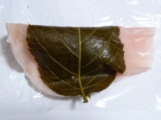

木佐清月堂の桜もち
2011/02/24
衣が薄くてピンク色がきれいな桜もちです。

しっとりとしていて、もちもちとした食感の衣が良かったです。
こしあんもマイルドな感じで、美味しかったです。
ここの桜餅は初めて食べたんですが、なかなかいいですね。
島根県出雲市平田町7548
2011/02/24
衣が薄くてピンク色がきれいな桜もちです。

しっとりとしていて、もちもちとした食感の衣が良かったです。
こしあんもマイルドな感じで、美味しかったです。
ここの桜餅は初めて食べたんですが、なかなかいいですね。